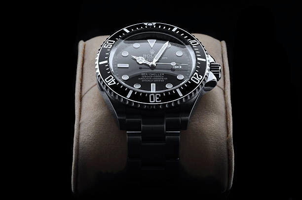

A.L MONTRES

Plusieurs choses importantes sont à noter:
- Les produits montrés sur ce site ne sont pas des produits de A.L montres
- Les informations (contacts et addresse) ne sont pas réels
- Les initiales A et L signifient Antoine et Louis, les créateurs (comme indiqué en bas de chaques pages) de ce projet
- Réalisateurs : Louis Allio et Antoine Salomon
- Producteurs : Louis Allio et Antoine Salomon
- Concepteurs : Louis Allio et Antoine Salomon
- Fabricants : Louis Allio et Antoine Salomon